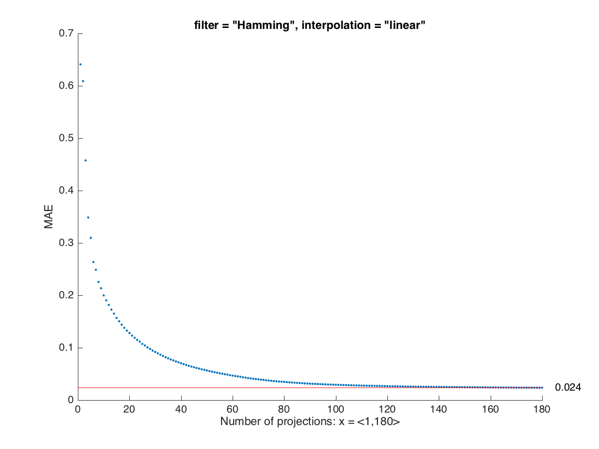
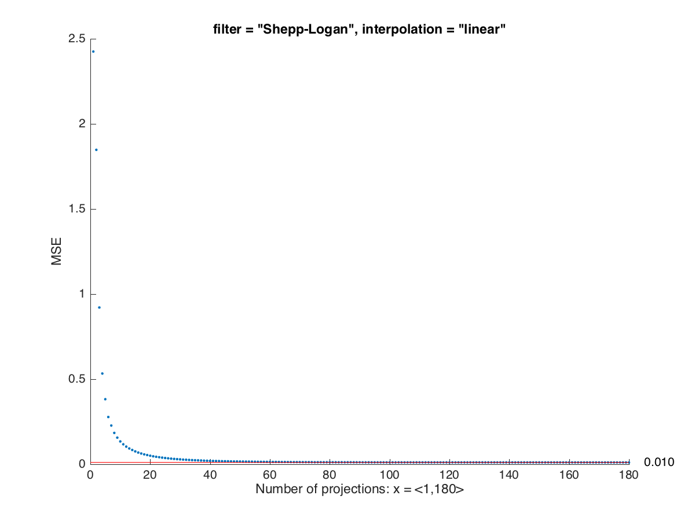

Lab 3
Kolejnym zadaniem było wykreślenie zależności jakości obrazu od liczby projekcji i rodzaju filtrowania. W tym celu zastosowano kilka miar pozwalających na określenie jakości rekonstrukcji metodą projekcji wstecznej: - SNR [dB] (ang. signal-to-noise ratio) - stosunek sygnału użytecznego do szumu podawany w dB, - PSNR [dB] (ang. peak signal-to-noise ratio) - stosunek maksymalnej mocy sygnału użytecznego do szumu podawany w dB, - MAE (ang. mean absolute error) - średni błąd bezwzględny, - MSE (ang. mean squared error) - średni błąd kwadratowy, - RMSE (ang. root mean squared error) - średnia kwadratowa błędu, - SSIM (ang. structural similarity index) - indeks podobieństwa strukturalnego obrazu badanego z referencyjnym. Błędem w tym przypadku są różnice w wartości pixeli pomiędzy obrazem wynikowym, a oryginalnym.
Kliknięcie w poniższe przyciski wyświetla odpowiednie wykresy.
SNR mierzy stosunek sygnału użytecznego (obraz interesującego nas obiektu) do pozostałego w sygnale szumu. Możemy to zbadać odnosząc obraz po rekonstrukcji do obrazu oryginalnego - normalnie nie posiadamy obiektu referencyjnego. Im większ wartość SNR tym więcej sygnału oryginalnego znajduje się w naszym obrazie, a więc możemy uznać, że obraz jest lepszej jakości.
Wartość wskaźnika rosła wraz ze wzrostem liczby projekcji - oznacza to, że jakość sygnału wynikowego względem wzorcowego się poprawiała. Należy zwrócić uwagę na szybkie zbliżanie się do wartości granicznej (wzrost logarytmiczny), już przy ok. 40 projekcjach wartość SNR mieściła się w granicach 3dB od wartości najlepszej.
Dobre wartości wskaźnika SNR otrzymaliśmy dopiero po filtracjach - dla których wskaźnik ten był bardzo zbliżony. Najwięszka wartość otrzymana była po przeprowadzeniu obrazu przez filtr Hann, choć nieznacznie odstawał on od pozostałych wyników - 8,029dB.
| Brak filtru | Ram-Lak | Shepp-Logan |
| Cosine | Hamming | Hann |
{kind=link}
{kind=link}
{kind=link}
{kind=link}
{kind=link}
{kind=link}
PSNR jest bardzo podobnym wskaźnikiem do SNR z tą różnicą, że odnosi się maksymalnej mocy sygnału użytecznego.
Poniższe wykresy przedstawiają jednakowe zależności co w przypadku zastosowania miary SNR.
Wg miary PSNR najlepszym filtrem ponownie okazał się Ram-Lak przemnożony przez okienko Hanna - 20,202dB.
| Brak filtru | Ram-Lak | Shepp-Logan |
| Cosine | Hamming | Hann |
{kind=link}
{kind=link}
{kind=link}
{kind=link}
{kind=link}
{kind=link}
MAE przedstawia średni bezwględny błąd, czyli średnią bezwględną różnice pomiędzy odtworzonym, a oryginalnym obrazem. W tym przypadku mniejsze wartości wskaźnika MAE są bardziej pożądane.
We wszystkich przypadkach widoczna jest zależność poprawy jakości obrazu wraz ze wzrostem liczby projekcji - poza jednym przypadkiem. Dla obrazu niepoddanemu filtracji widoczna jest odwrotna zależność - ten problem wynika z zastosowania miary bezwzględnej.
Najlepszym filtrem wg tej miary okazuje się filtr Hann - 0,023.
| Brak filtru | Ram-Lak | Shepp-Logan |
| Cosine |  Hamming | Hann |
{kind=link}
{kind=link}
{kind=link}
{kind=link}
{kind=link}
{kind=link}
MSE liczy średnią kwadratów błędu naszego wygenerowanego obrazu. Jest to jedna z najpopularniejszych miar oceny jakości modelu w przetwarzaniu sygnałów i innych dziedzinach.
Błąd malał dla wszystkich przypadków wraz ze wzrostem liczby projekcji. Znikają również problemy związane z obrazem bez filtru obecne przy analizie w wykorzystaniem MAE.
Wszystkie filtry dały niemal jednakowe wyniki, wciąż filtr Hann znajduję się w czołówce - 0,010.
| Brak filtru | Ram-Lak |  Shepp-Logan |
| Cosine | Hamming |
 Hann
Hann
|
{kind=link}
{kind=link}
{kind=link}
{kind=link}
{kind=link}
RMSE to błąd średniokwadratowy - miara bardzo podobno do MSE.
Analiza z wykorzystaniem tej miary pozwala wyciągnąć niemal identyczne wnioski co z wykorzystaniem MSE.
Najlepszymi filtrami pod względem RMSE są filtry Hamminga i ponownie Hanna - 0,098.
| Brak filtru | Ram-Lak |
 Shepp-Logan
Shepp-Logan
|
| Cosine | Hamming | Hann |
{kind=link}
{kind=link}
{kind=link}
{kind=link}
{kind=link}
SSIM to indeks wykorzystywany jedynie w dziedzinie analizy obrazów. Pozwala on na wyznaczenie stopnia podobieństwa strukturalnego dwóch obrazów. Im większy jest ten wskaźnik tym bardziej podobne są do siebie dwa badane obrazy.
Dla rekonstrukcji bez filtru SSIM z trudem rozpoznaje jakiekolwiek podobieństwa strukturalne. Po zastosowaniu filtrów widzimy dopiero bardzo dobrą, zbliżoną do liniowej zależność - wartość SSIM jest wprost proporcjonalna do liczby projekcji wykorzystanej do rekonstrukcji obrazu.
Ponownie najlepszym filtrem okazuje się filtr Hann - 0,895.
| Brak filtru | Ram-Lak | Shepp-Logan |
| Cosine |
 Hamming
Hamming
|
Hann |
{kind=link}
{kind=link}
{kind=link}
{kind=link}
{kind=link}
Poniższa tabela zawiera zestawienie miar dla rekonstrukcji z użyciem 180 projekcji.
| None | Ram-Lak | Shepp-Logan | Cosine | Hamming | Hann | |
|---|---|---|---|---|---|---|
| SNR | -46.433 | 7.486 | 7.646 | 7.893 | 8.001 | 8.029 |
| PSNR | -34.261 | 19.658 | 19.818 | 20.066 | 20.174 | 20.202 |
| MAE | 49.807 | 0.028 | 0.026 | 0.024 | 0.024 | 0.023 |
| MSE | 2667.467 | 0.011 | 0.010 | 0.010 | 0.010 | 0.010 |
| PMSE | 51.648 | 0.104 | 0.102 | 0.99 | 0.98 | 0.98 |
| SSIM | 0.001 | 0.790 | 0.831 | 0.882 | 0.892 | 0.895 |
Wnioski
Wyniki zawarte w tabeli sugerują, że najlepszym filtrem dla rekonstrukcji przy pomocy projekcji wstecznej okazuje się filtr Hanna. Niestety nie sposób przewidzieć czy filtr ten powinien być zastosowany przy każdej generacji obrazu tego typu. Rodzaj zastosowanego filtru powinien zależeć od struktury obrazu wejściowego (lub obiektu, którego projekcie składano), a także natury szumu obecnego w obrazie wynikowym. Powyższe wyniki są właściwe jedynie dla operacji na obrazie Phantom i dla tego obrazu najlepszym filtrem jest filtr Hann.
Przeprowadzone obliczenia jasno też wskazują, że większa liczba projekcji poprawia jakość rekonstrukcji. Jednak warto zawuważyć bardzo szybką poprawę jakości wraz ze wzrostem liczby projekcji - oznacza to, że można poświęcić dużą liczbę projekcji (np. 40 zamiast 180) jednocześnie w nieznacznym stopniu pogarszając odwzorowanie obiektów na obrazie wynikowym. Jest to bardzo istotna sprawa, ponieważ każda projekcja w metodzie tomografii komputerowej CT wiąże się z użyciem silnego i niebezpiecznego promieniowania.
Kod MATLAB
scriptSNR.m
radonSNR.m
SNR.m
scriptPSNR.m
radonPSNR.m
PSNR.m
scriptMAE.m
radonMAE.m
MAE.m
scriptMSE.m
radonMSE.m
MSE.m
scriptRMSE.m
radonRMSE.m
RMSE.m
scriptSSIM.m
radonSSIM.m
SSIM.m
rescale.m